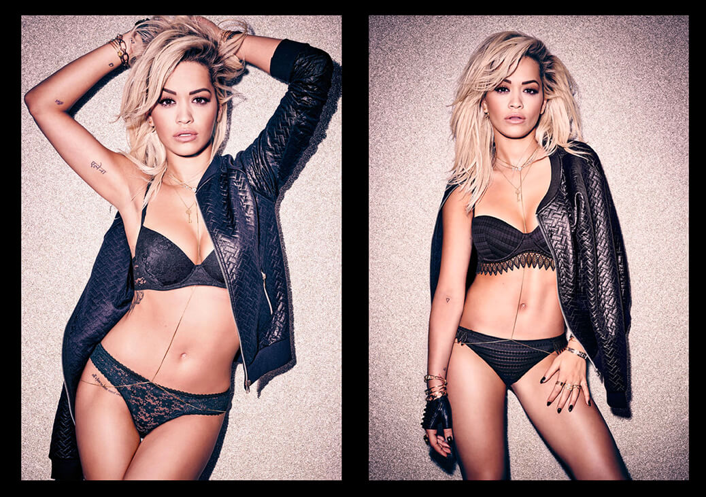

Rita Ora for Tezenis
Equipment sourcing, studio co-ordination
I am an adaptable, enthusiastic and hard working individual seeking new challenges in which to demonstrate the skills that I have acquired during my years in industry.
Since graduating, my employment has been based in image research and photographic production and I am now looking to consolidate and build on this knowledge and progress into a new role.
During my long-term role at Catwalking.com I travelled internationally over fashion weeks with industry legends Chris Moore and Suzy Menkes to ensure smooth delivery of content for the fashion week coverage in the International Herald Tribune, whilst also fulfilling the requirements of other major titles such as the Financial Times and The Times Newspaper's daily fashion pages.
Now at Sunbeam Studios working on all aspects of the production process for major editorials, music videos and large-scale advertising campaigns of high profile photographers, major international models and VIP and celebrity clients.
Equipment sourcing, studio co-ordination
Studio Co-ordination, catering, lighting equipment sourcing
Studio co-ordination, set build, catering
Studio co-ordination, catering, prop sourcing

Studio co-ordination
Props, set building, catering
Studio co-ordination
Studio co-ordination
Studio / on set co-ordination
Studio / on set co-ordination, set build, catering, props
Picture research, archive management
Archival picture research
Trend research, key wording
Beauty research, file management, key wording
Seasonal trend research, file management, key wording
Photographers' booker, photo crew travel arrangement, retouching and editing of in house client images
Photographers' booker, image editing, photo crew travel arrangement, retouching of client images
Photographers' booker, image editing, photo crew travel arrangement, retouching of client house images
A production role, at a fast paced and demanding high-end photography and events studio. I am the main point of contact for clients on set and manage their production requirements before, during and after the shoot. The job involves production of multiple upcoming bookings and projects whilst simultaniously managing on set requests from live jobs in the five studios. All tasks are undertaken in accordance with clients budgetary needs in mind whilst managing the expectations of creative teams.
Freelance production roles as on set producer, ensuring the smooth running of the shoots throughout the day for a range of clients for fashion, beauty and lifestyle including Harpers Bazaar and AYA magazine.
Whilst working in the busy press office and marketing department of this prestigious British fashion house I gained many practical business and fashion industry skills. Duties amongst others involved designer research, producing photographic displays and retouching images, preparing press packs and mail outs, market research, coordinating and managing interns; merchandising of the press showroom and managing the samples ensuring garment send outs were monitored and prioritised in order to gain maximum media coverage for the brand.
2004 - 2008 London College of Fashion BA Hons. Fashion Management: Marketing with a year in industry.
2015 Principles of Project Management: Open University (Short Course)